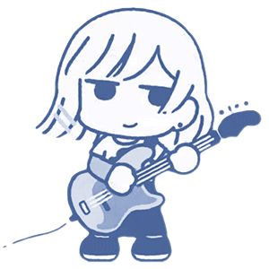

Ryo Yamada
Nome artístico: Ryo
Ryo Yamada é a baixista da Kessoku Band, conhecida por sua personalidade excêntrica e sua atitude descontraída em relação à vida. Apesar de ser uma pessoa que parece não se preocupar com muito, Ryo tem uma paixão genuína pela música. Ela se juntou à banda após ser convidada por Nijika, a baterista, e rapidamente se tornou uma peça chave no som único da Kessoku Band.
Desde jovem, Ryo sempre teve um interesse por música, mas sua abordagem era um tanto relaxada. Ela começou a tocar baixo como uma forma de expressão pessoal e, apesar de não se importar com a fama ou a popularidade, ela ficou muito envolvida na dinâmica do grupo. Sua habilidade com o baixo é indiscutível, e ela traz uma vibe única e um toque de irreverência para as músicas da banda.
O dia a dia de Ryo na banda é marcado pela descontração e pela busca de diversão em tudo o que faz. Embora seja muitas vezes vista como a mais calma e desapegada do grupo, ela tem um enorme carinho pelas outras integrantes da banda. Ela também é uma das maiores apoiadoras de Bocchi, ajudando-a a encontrar seu lugar na banda, apesar de sua timidez.
Com o tempo, Ryo vai se conectando mais com as outras membros, e sua amizade com elas cresce, especialmente com Nijika e Bocchi. Sua jornada na banda é uma mistura de crescimento musical e pessoal, aprendendo a equilibrar a diversão com as responsabilidades de ser parte de um grupo musical.